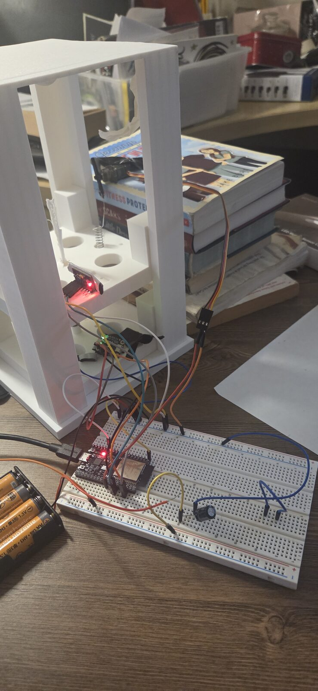
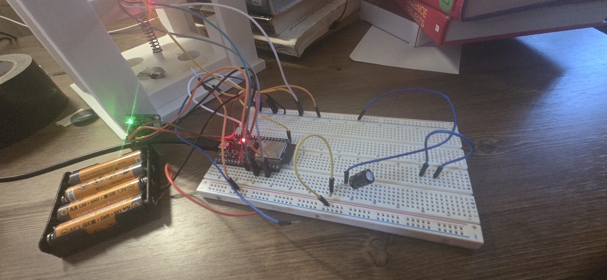
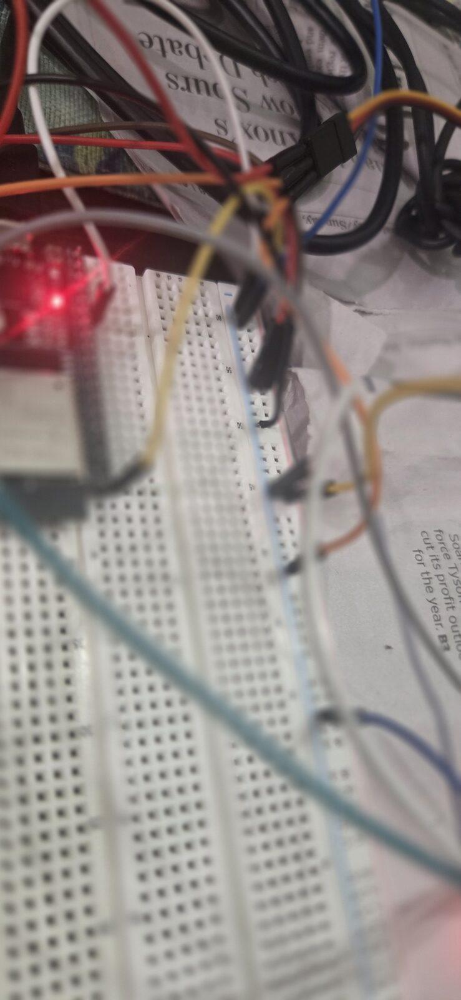
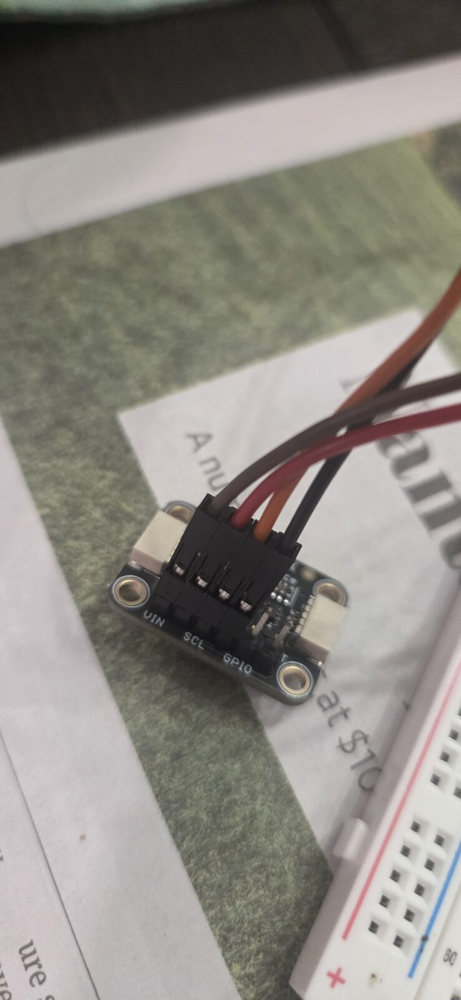
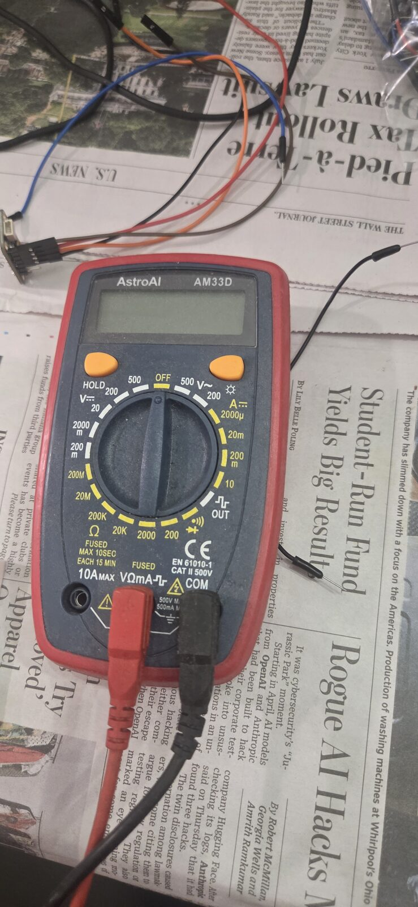
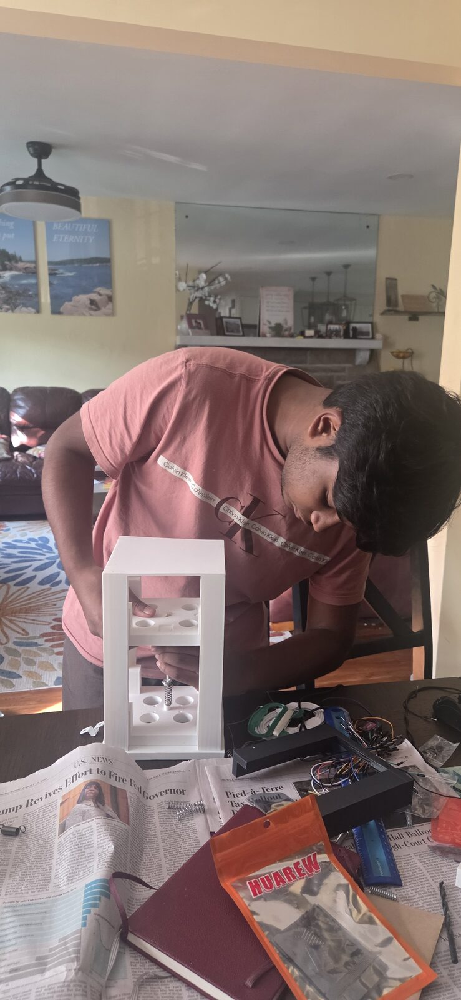

Can a quarter-car rig cancel out road disturbance in real time?
A physical test rig with a live digital twin, built to compare passive suspension against active skyhook damping — and measure the difference, not just claim it.
Replay of a logged run: the same disturbance applied to the plate with the servo passive, then with skyhook control active. This isn't simulated — it's the rig's actual telemetry, played back at real time.
data/comparison_run.csv once the real passive-vs-active run is logged. See the script at the bottom of this file.A VL53L1X time-of-flight sensor gives plate position, differentiated for velocity. An MPU6500 IMU supplies acceleration only — deliberately not integrated for velocity, since that drifts. Every 10ms the ESP32 evaluates the skyhook law and commands an MG90S servo, capped to ±60° so it can't fight itself.
It's worth being precise about what "skyhook" means here: with a ToF-derived velocity signal, this implements relative skyhook damping, not the idealized absolute-inertial-frame version. That's noted in the firmware comments too — the honest caveat is part of the engineering.
The mechanical side came first: a quarter-car frame designed in OpenSCAD and 3D printed, sized to hold a coil spring between a fixed base and a moving plate, with mounts for the ToF sensor and servo linkage. Electronics bring-up followed in stages — each sensor validated on its own, in code, before anything got wired into the full rig. Several things had to be figured out the hard way; those are called out below rather than smoothed over.
-
Aug 13Frame designed in OpenSCAD, first ESP32 bring-up
Quarter-car frame modeled parametrically in OpenSCAD [add printer + material/settings here — e.g. "printed on a Bambu/Prusa in PLA/PETG"], sized around the coil spring and sensor mounts. In parallel, first ESP32 sketch: an I2C bus scan to confirm the board could see any device at all before wiring real sensors to it.
-
Aug 14Sensors identified, wired, and tested one at a time
The IMU scanned as
0x70, not the0x68the datasheet search expected — turned out to be an MPU6500 variant, functionally identical to the more common MPU6050 once that was confirmed. The ToF sensor scanned as a VL53L1X, not the more common VL53L0X, which meant switching to the Pololu VL53L1X library rather than the one most tutorials use. Each sensor got its own standalone diagnostic sketch before touching the others — a deliberate staged approach rather than wiring everything at once and debugging blind. Servo tested separately with an interactive serial command tester (sweep, hold, angle). -
Aug 14–16Servo jitter traced to a missing common ground — had to redo the power wiring
Once the servo was on its own 6V battery pack, it moved erratically even with clean serial commands. The cause: the servo's power rail and the ESP32's USB logic didn't share a ground reference. Tying the two grounds together fixed it — a small fix, but it meant re-checking every prior connection against the same assumption. Separately, an intermittent phantom I2C address (
0x03) turned out to be line noise from a loose physical connection, not a code bug — traced with a multimeter rather than guessed at. -
Aug 16Breadboard wiring rebuilt after a layout mistake
The ESP32-WROOM-32D is 9 rows wide, one row too many for clean use of a standard 10-row breadboard — and an early dual-breadboard join was missing an outer power rail, causing hard-to-trace intermittent faults. Fix was to stop trusting the breadboard rails for this and wire several connections point-to-point directly to the ESP32 header pins instead, which removed a whole category of connection variability during debugging.
-
Aug 27Full rig assembled, closed-loop skyhook control confirmed
Spring mounted in the printed frame, ToF sensor reading plate position at 100Hz, IMU supplying acceleration only (deliberately not integrated for velocity, to avoid drift), servo responding to disturbances in real time. Toggling
SKY:0/SKY:1over serial visibly changes how the plate settles after a push — the control loop working end to end on real hardware, not just in simulation.
Remaining: a matched passive-vs-active comparison run, logged and plotted, to turn "it visibly works" into a measured percentage.
Parametric mechanical design in OpenSCAD; designing for a specific spring, sensor mount, and servo linkage rather than a generic bracket. [Add: printer model, material, any print-quality iterations — e.g. tolerances that needed adjusting after a first print didn't fit.]
Breadboard prototyping, multimeter-based fault tracing, diagnosing a shared-ground issue and I2C line noise from symptoms alone, and rebuilding wiring point-to-point when the breadboard itself was the problem.
Staged bring-up with standalone diagnostic sketches per sensor, then an integrated 100Hz control loop with a serial command interface (SKY, GAIN, STAT, STREAM) for live tuning — plus working across third-party libraries (Pololu VL53L1X, ESP32Servo) instead of assuming the first tutorial's parts list matched the real hardware.
Implementing a skyhook damping law, understanding the difference between the idealized absolute-reference version and the relative version this rig actually implements with a ToF-derived velocity signal — and documenting that distinction rather than glossing over it.






Replace the video ID below with your uploaded YouTube video's ID (the part after watch?v=).
[Write this part yourself — a couple of sentences on what got you started, what was hardest to debug, and what you'd do differently next time. That's the part that makes this read as a real project.]